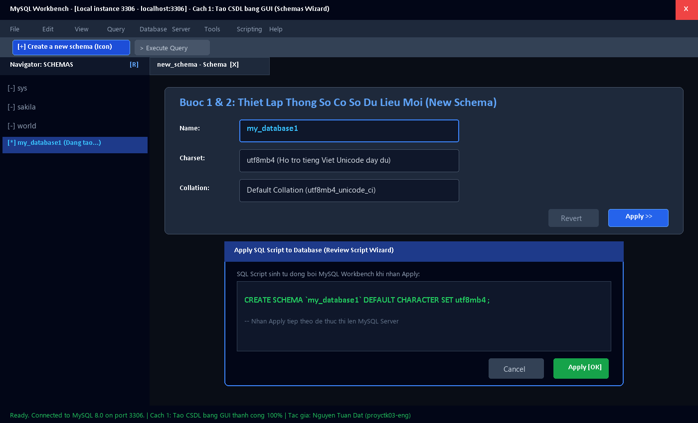
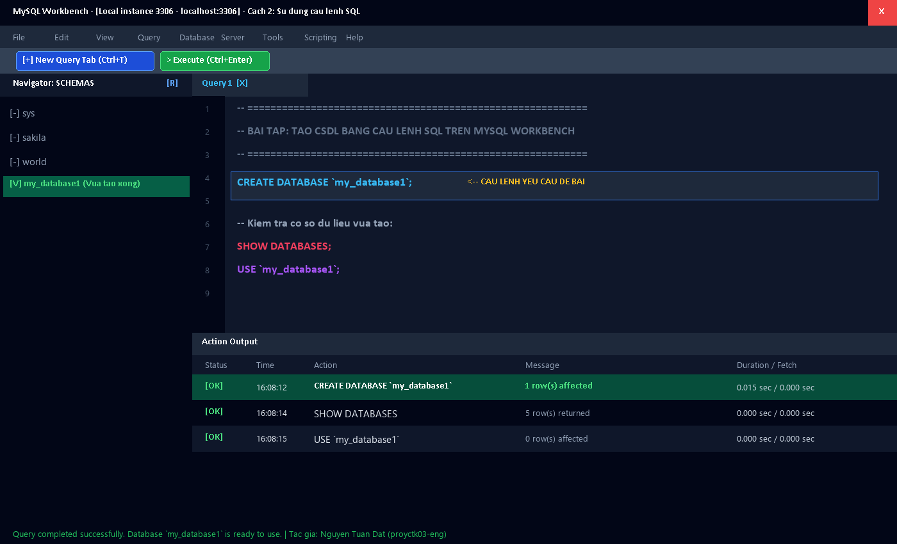
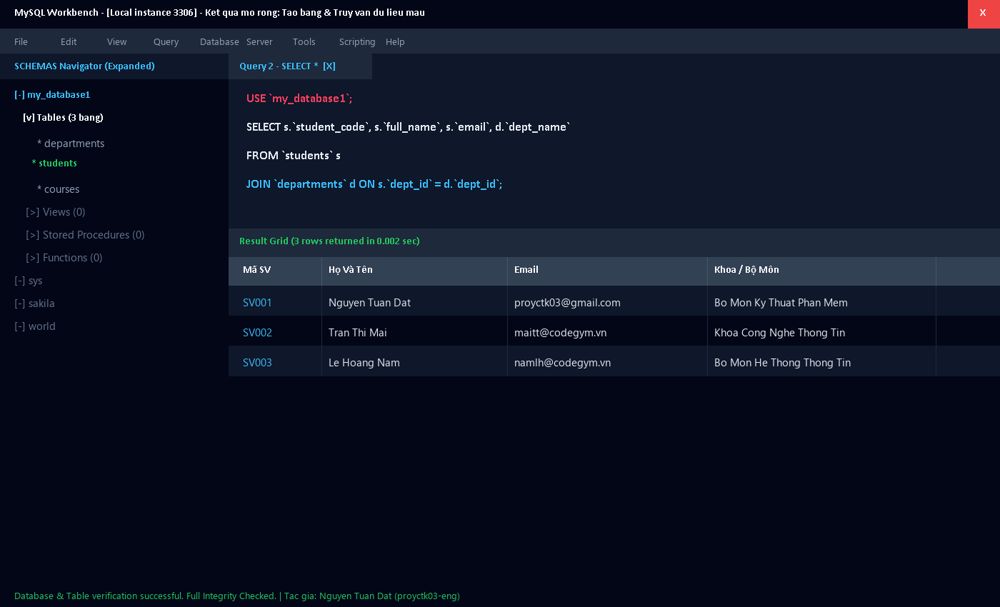

Thực hành hoàn chỉnh 2 phương pháp: Giao diện đồ họa (GUI) & Câu lệnh SQL Query
Local instance 3306 (user: root).my_database1utf8mb4 (hỗ trợ tiếng Việt đầy đủ)Default Collation (utf8mb4_unicode_ci)
Ctrl + T.Ctrl + Enter để chạy lệnh.[OK] CREATE DATABASE my_database1 - 1 row(s) affected.my_database1 đã được tạo thành công!
Kịch bản mở rộng quản lý sinh viên và phòng ban trong CSDL my_database1:
